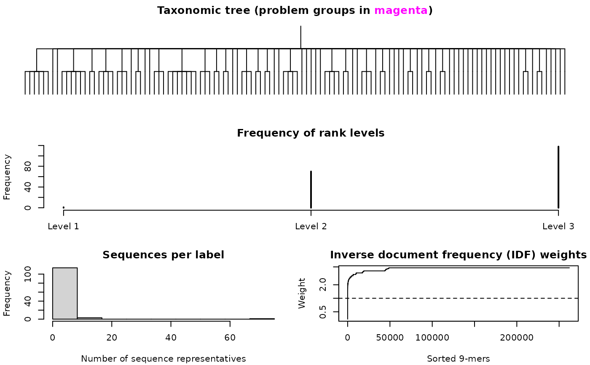

LearnTaxa.RdTrains a classifier based on a reference taxonomy containing sequence representatives assigned to taxonomic groups.
LearnTaxa(train,
taxonomy,
rank = NULL,
K = NULL,
N = 500,
minFraction = 0.01,
maxFraction = 0.06,
maxIterations = 10,
multiplier = 100,
maxChildren = 200,
alphabet = AA_REDUCED[[139]],
verbose = TRUE)An AAStringSet, DNAStringSet, or RNAStringSet of unaligned sequences.
Character string providing the reference taxonomic assignment for each sequence in train. Taxonomic ranks are separated by semicolons (``;'') beginning with ``Root''.
Optionally, a data.frame with 5 named columns giving the ``Index'' (i.e., 0 to the number of unique taxa), ``Name'' (i.e., taxon name), ``Parent'' (i.e., ``Index'' of the parent taxon), ``Level'' (i.e., integer rank level), and ``Rank'' (e.g., ``genus'') of each taxonomic rank. This information is often provided in a separate ``taxid'' file along with publicly available training sequence sets.
Integer specifying the k-mer size or NULL (the default) to calculate the k-mer size automatically. The default value of K is such that matches between sequences are found by chance every N k-mers.
Numeric indicating the approximate number of k-mers that can be randomly selected before one is found by chance on average. For example, the default value of 500 will set K (when K is unspecified) so that every 500th k-mer is expected to match by chance.
Numeric giving the minimum fraction of k-mers to sample during the initial tree descent phase of the classification algorithm. (See details section below.)
Numeric giving the maximum fraction of k-mers to sample during the initial tree descent phase of the classification algorithm. (See details section below.)
Integer specifying the maximum number of iterations to attempt re-classification of a training sequence before declaring it a ``problem sequence''. (See details section below.)
Numeric indicating the degree to which individual sequences have control over the fraction of k-mers sampled at any edge during the initial tree descent phase of the classification algorithm. (See details section below.)
Integer giving the maximum number of child taxa of any taxon at which to consider further descending the taxonomic tree. A value of 1 will prevent use of the tree descent algorithm altogether. Lower values may decrease classification speed, but result in output objects that require less memory.
Character vector of amino acid groupings used to reduce the 20 standard amino acids into smaller groups. Alphabet reduction helps to find more distant homologies between sequences. A non-reduced amino acid alphabet can be used by setting alphabet equal to AA_STANDARD.
Logical indicating whether to display progress.
Learning about the training data is a two part process consisting of (i) forming a taxonomic tree and then (ii) ensuring that the training sequences can be correctly reclassified. The latter step relies on reclassifying the sequences in train by descending the taxonomic tree, a process termed ``tree descent''. Ultimately, the goal of tree descent is to quickly and accurately narrow the selection of groups where a sequence may belong. During the learning process, tree descent is tuned so that it performs well when classifying new sequences.
The process of training the classifier first involves learning the taxonomic tree spanning all of the reference sequences in train. Typically, reference taxonomic classifications are provided by an authoritative source, oftentimes along with a ``taxid'' file containing taxonomic rank information. The taxonomic tree may contain any number of levels (e.g., Root, Phylum, Class, Order, Family, Genus) as long as they are hierarchically nested and always begin with ``Root''.
The second phase of training the classifier, tree descent, involves learning the optimal set of k-mers for discerning between the different sub-groups under each edge. Here a fraction of the k-mers with the greatest discerning power are matched to a training sequence, and this process is repeated with 100 random subsamples to decide on the set of possible taxonomic groups to which a training sequence may belong.
The learning process works by attempting to correctly re-classify each training sequence in the taxonomy. Initially, maxFraction of informative k-mers are repeatedly sampled at each edge during tree descent. Training sequences that are incorrectly classified at an edge will lower the fraction of k-mers that are sampled by an amount that is proportional to multiplier. As the fraction of sampled k-mers decreases, the tree descent process terminates at higher rank levels.
A major advantage of tree descent is that it both speeds up the classification process and indicates where the training set likely contains mislabeled sequences or incorrectly-placed taxonomic groups. Training sequences that are not correctly classified within maxIterations are marked as ``problem sequences'', because it is likely that they are mislabeled. If enough sequences have difficulty being correctly classified at an edge that the fraction drops below minFraction, then the edge is recorded as a ``problem group''.
The final result is an object that can be used for classification with IdTaxa, as well as information about train that could be used to help correct any errors in the taxonomy.
An object of class Taxa and subclass Train, which is stored as a list with components:
A character vector containing all possible groups in the taxonomy.
A character vector containing the basal taxon in each taxonomy.
A character vector of rank names for each taxon, or NULL if rank information was not supplied.
Integer giving the rank level of each taxon.
A list containing the index of all children in the taxonomy for each taxon.
An integer providing the index of the parent for each taxon.
A numeric between minFraction and maxFraction that represents the learned fraction of informative k-mers to sample for each taxon during the initial tree descent phase of the classification algorithm. Problem groups are marked by a fraction of NA.
List containing the integer indices of sequences in train belonging to each taxon.
List containing the unique sorted k-mers (converted to integers) belonging to each sequence in train.
Integer indicating the index in taxonomy of each sequence's taxonomic label.
The value of K provided as input.
Numeric vector of length 4^K providing the inverse document frequency weight for each k-mer.
List of informative k-mers and their associated relative frequencies for each internal edge in the taxonomy.
A data.frame providing the ``Index'', ``Expected'' label, and ``Predicted'' taxon for sequences that could not be correctly classified during the initial tree descent phase of the algorithm.
Character vector containing any taxonomic groups that repeatedly had problems with correctly re-classifying sequences in train during the initial tree descent phase of the classification algorithm. Problem groups likely indicate that a number of the sequences (or an entire group of sequences) assigned to the problem group are incorrectly placed in the taxonomic tree.
The alphabet when train is an ``AAStringSet'', otherwise NULL.
Murali, A., et al. (2018). IDTAXA: a novel approach for accurate taxonomic classification of microbiome sequences. Microbiome, 6, 140. https://doi.org/10.1186/s40168-018-0521-5
If K is NULL, the automatically determined value of K might be too large for some computers, resulting in an error. In such cases it is recommended that K be manually set to a smaller value.
# import training sequences
fas <- system.file("extdata", "50S_ribosomal_protein_L2.fas", package="DECIPHER")
dna <- readDNAStringSet(fas)
# parse the headers to obtain a taxonomy
s <- strsplit(names(dna), " ")
genus <- sapply(s, `[`, 1)
species <- sapply(s, `[`, 2)
taxonomy <- paste("Root", genus, species, sep="; ")
head(taxonomy)
#> [1] "Root; Rickettsia; prowazekii" "Root; Porphyromonas; gingivalis"
#> [3] "Root; Porphyromonas; gingivalis" "Root; Porphyromonas; gingivalis"
#> [5] "Root; Pasteurella; multocida" "Root; Pasteurella; multocida"
# train the classifier
trainingSet <- LearnTaxa(dna, taxonomy)
#> ================================================================================
#>
#> Time difference of 5.39 secs
#>
trainingSet
#> A training set of class 'Taxa'
#> * K-mer size: 9
#> * Number of rank levels: 4
#> * Total number of sequences: 317
#> * Number of groups: 118
#> * Number of problem groups: 0
#> * Number of problem sequences: 0
# view information about the classifier
plot(trainingSet)

if (FALSE) {
# train the classifier with amino acid sequences
aa <- translate(dna)
trainingSetAA <- LearnTaxa(aa, taxonomy)
trainingSetAA
}